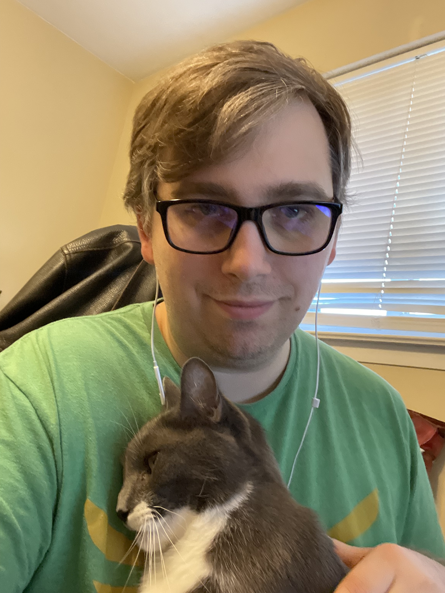

Mark Bennett's Resume

Objective
I am rebooting my development career and rebuilding my skills from a
fundamental level.
Education
Nimitz High School
Graduated 2005
Southern Methodist University
Full-Stack Web Development Certificate 2018
Work Experience
Kin & Carta - Cloud Engineer
June 2022 - Present
- As a Consultant, I collaborated directly with clients to develop enterprise financial software.
- Used Java/Spring Boot, OCP, SQL, and Action
Homecare Homebase - Product Support Specialist
July 2021 - May 2022
- Coordinated with clients and incident managers by researching third-tier support tickets using SQL and .NET skills.
- Documented problems and bugs in the software using Azure DevOps and Service Now
- Wrote impact queries to determine the prevalence of documented bugs throughout client databases
Axiallon - Full-Stack Software Developer
February 2021 - June 2021
- Developed Front-End for clients using AngularJS
- Wrote unit tests for existing AngularJS code using Cypress
TEKsystems - Full-Stack Developer/Business Analyst
December 2018 - January 2021
- Developed, tested, and deployed Back-End Microservices in Golang using gRPC, MongoDB, AtlasDB, Docker, and Kubernetes
- Built, tested, and deployed a caching system that drastically reduced the launch time of clients' virtual environments
- Converted a client's shop and search web app from vanilla JS to ReactJS
- Teacher's Assistant in an in-house full-stack bootcamp for new hires; SME and teacher for the Spring Boot unit
- Provided Business Analysis services for an insurance portal Web Application
- Scrum master on an internal project developing a recruitment dashboard
Skills and Additional Experience
- Full-Stack Development, specializing in Back-End Microservices
- Language/Framework proficiencies
- Java/Spring Boot
- SQL
- ReactJS
- Consulting
- Customer Service
- Leadership
- Product Support
- Technical Writing